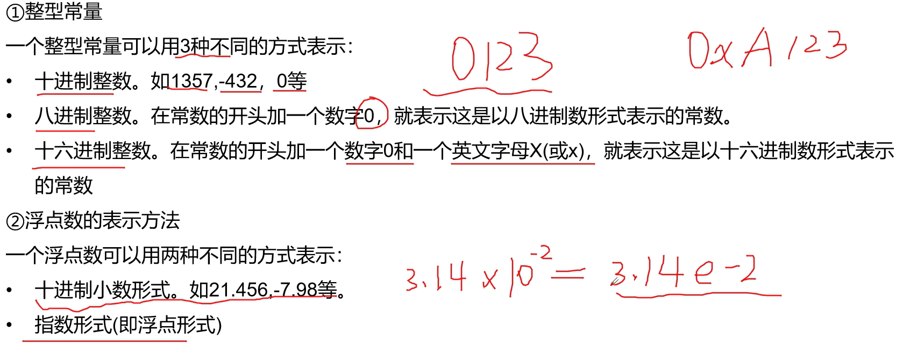
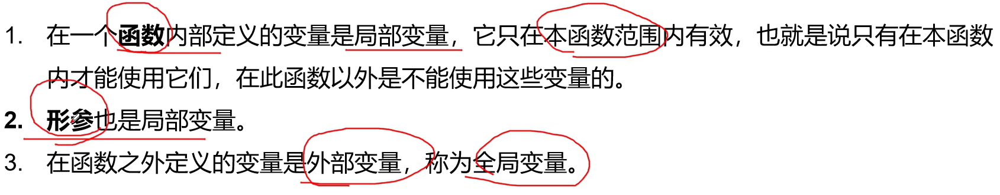
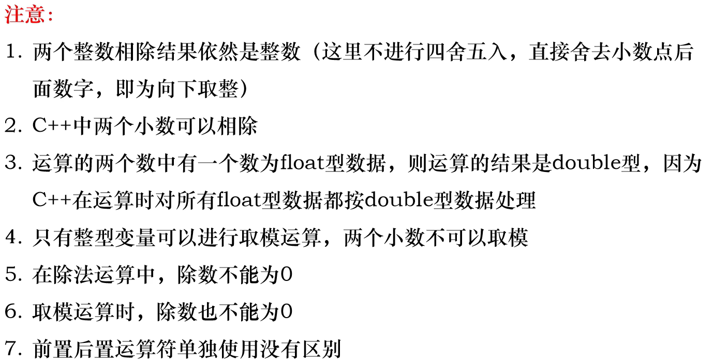
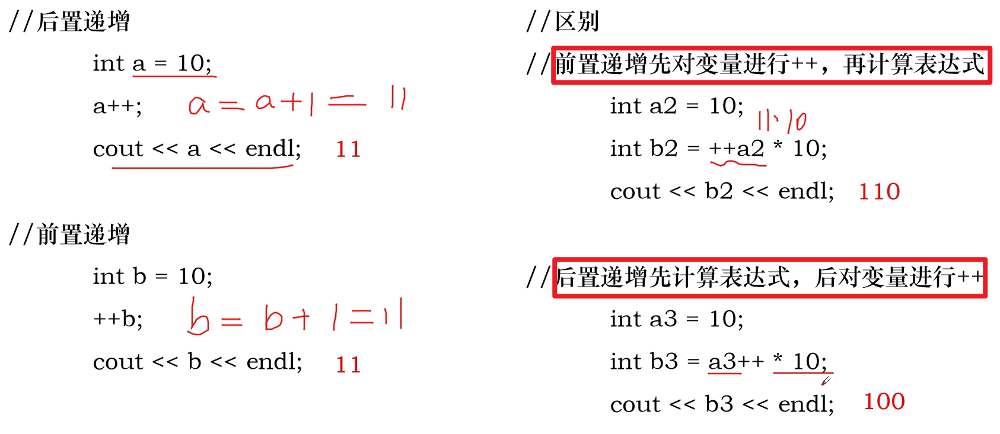
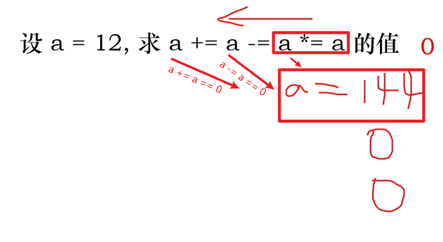
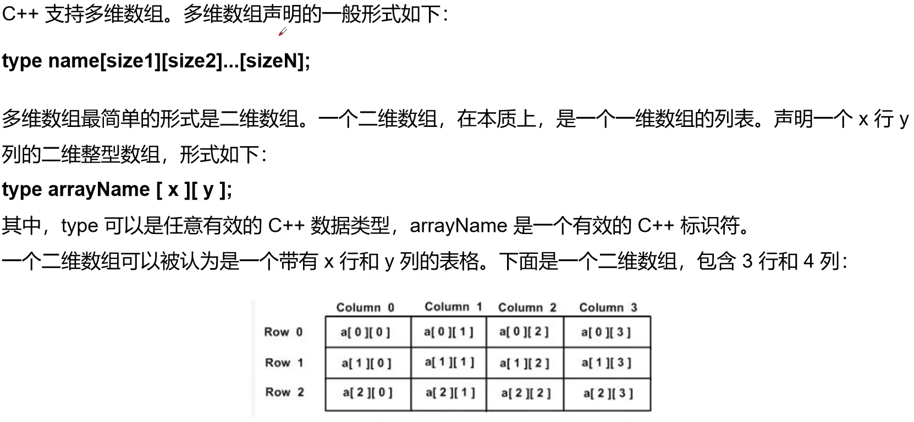
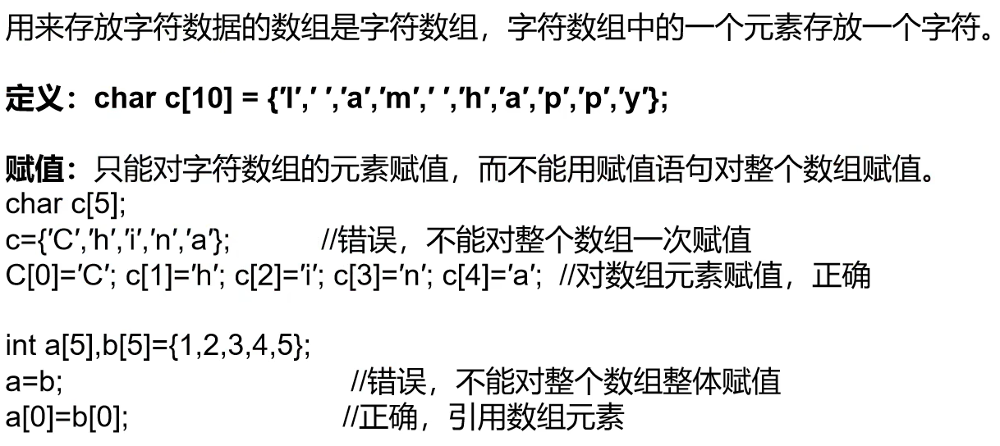
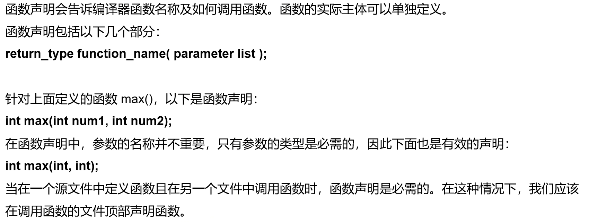
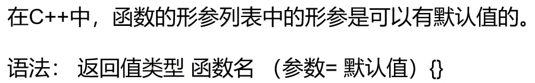

C++学习笔记
本篇笔记摘自《C++程序设计》3小时期末速成不挂科！！！ - 数学建模老哥,遵循CC BY 4.0协议。
存在由AI生成的小部分内容，仅供参考，请仔细甄别可能存在的错误。
一、数据类型
- C++的数据包括常量与变量，都具有一些数据类型：
1. 常见数据类型

2.常量
- 分为数值常量和字符(串)型常量两种
① 数值常量

- 指数形式： -> 3.14e-2
② 字符型常量

② 字符串型常量

③ 常考例题

3.整型
- 占n个字节的有符号整数，取值范围是 ~
- 占n个字节的有符号整数，取值范围是 ~
4.浮点型

5.布尔类型

６.变量命名规则

7.局部变量与全局变量

二、运算符
1.算术运算符



- 例题：

2.赋值运算符

3.比较运算符（关系运算符）
- 用于表达式的比较，并返回一个真值或假值

4.逻辑运算符

5.位运算符
- 两个多位二进制进行逻辑运算，采取按位逻辑运算的方法：
6.杂项运算符

sizeof()多用于获取数组长度，如：
1 | |
7.运算符优先级
略
三、流程控制语句
if语句、switch语句、while语句、for语句、Switch语句等过于基础，此处略去
四、数组
1.一维数组

2.二维数组



五、函数
1.函数定义

- 即使制定了函数返回值类型为void，在函数体中也可以写
return;实现直接返回、取消执行后续逻辑的操作。
2.函数声明

3.函数调用

4.默认参数

- 默认值参数应该位于形参列表的尾部，即无默认值的参数前面不应该出现有默认值的参数
5.内联函数(内置函数)

- 内联函数分显示声明与隐式声明两种：
六、指针与自定义数据类型
七、类和对象
八、继承与多态
九、文件与流
C++学习笔记
http://blog.morely.top/2025/06/09/CPP学习笔记/